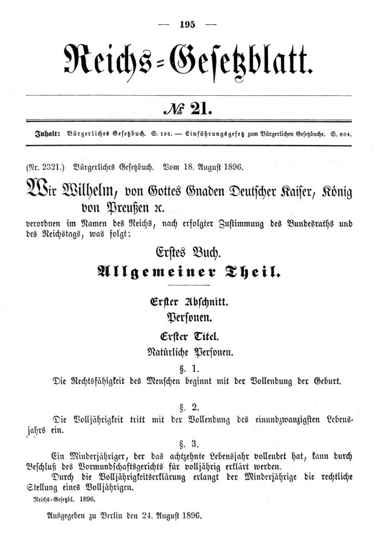

这一页在做什么
这一页两节，前后像两个世界。§3 讲德国法：民法、刑法、劳动法里的期限，中间插进堕胎法里的「期限方案」。§4 一下转到哲学：作者选读海德格尔怎样谈人朝向死亡，在海德格尔的黑森林里自己编了一个雾中走山路的小故事，最后和马夸德争「时间就是期限」这句话。读的时候抓两条线：期限在法律里替人做了什么事，和第 49 段那个全书的转折。
雾中的林间小路。作者在第 56–62 段编的故事就发生在这样的路上：雾很浓，只看得清脚前几步。照片拍的是一片雾中的林子，和本书无关。F R，公有领域，维基共享资源
读之前：这一页在全书的哪里
上一页（第 8 章前两节）讲钟、历法、记事本和图书馆的借期，给期限（Frist）下了定义：一段有起点、有终点的时间。这一页先把期限带进法律，再在第 49 段做全书的转折：前面一直拿短的人生比长的技艺，从这里起另一端换成了死亡。海德格尔的「向死存在」在第 7 章讲布鲁门贝格时露过一面，这里才正式讲。第 61 段说「前面讲过」日常期限的杂乱，指的就是本章第 2、3 节。
期限从借书证、法条一路说到人的一生。把人生叫作「一段期限」，多看见了什么，又漏掉了什么？
读的时候带着这几个问题。不用先找答案，读完回来对照「检查一下理解」。
法律给追诉定时效、给犯人定刑期，作者说这背后各是什么考虑？§3
一场几十年的道德之争，怎么能靠期限平息下来？作者是赞许，还是带着保留？§3
作者编的林中路故事里，雾、林中空地、伐木场各像人生里的什么？§4
这一页的路线
§3 像一份法学讲义：先说期限在法律里常被忽视，接着分三类（时效、刑期、除斥期间），各举德国法的条文，第 38 段顺手回到时间和钱。花饰分隔之后插进刑法第 218 条，再一段讲劳动法，引了两款法条，落在「期限反讽」上。§4 第一段就是全书的转折。接着作者选读《存在与时间》，第 54 段一口气排出一串 vor- 开头的德文词，最吃力，先抓住「都指向未来」这一层就够。第 56 段起作者自己编故事，第 61 段声明这不是海德格尔的话，又给故事换了个结局；最后一段才请出马夸德，作者在那里亮出自己的立场。
§3 第 32–48 段
§4 第 49–65 段
期限被忽视
三类期限 时效 刑期 除斥
第 218 条
劳动法 期限反讽
全书转折 不再比技艺
海德格尔
林中路寓言 两种走法
马夸德 作者的立场
本站示意图。蓝点是法律这条线，橙点是哲学这条线，折线是阅读顺序，虚线是两节的分界。两节之间没有过渡句，第 49 段直接换题。 作者落在哪： 法律这半，作者看到期限既能平息道德之争，也会长成只有熟门路的律师才走得顺的迷宫。第 49 段起他换了另一端：人生本身是一段以死为终点的期限，终点被日常的小期限遮住；但他不肯说一切时间都是期限。
分节地图
这一页是原书第 8 章的第 3–4 节。粗体是这一节的主角；斜体是英文这一节开头的几个词，在电子书里搜它就能跳到那里；节里的转折用段号点出来。读完打个勾。
德国民法、刑法、劳动法里的期限约 2000 词 Deadline-periods (Fristen) are an important … 三类法律期限；第 41 段起是堕胎法，第 43 段起是劳动法。注号有错位。 海德格尔的向死存在，雾中的林中路约 2000 词 Up to this point in this … 第 49 段是全书的转折；第 56–64 段是作者编的寓言，第 65 段亮出立场。
先用中文过一遍：这一页的概念
作者常常一笔带过、默认你懂的概念，这里先从书外讲一遍：它从哪来，是什么意思。它在这一页起什么作用，看每块最后一句。讲过的概念都汇总在概念汇总 。
§3 期限方案 Fristenlösung（德国堕胎法的一种模式） Fristenlösung 由 Frist（期限 ）和 Lösung（解决办法）拼成，是德国法律讨论里的说法：怀孕头若干周内终止妊娠不罚，过了期限才按刑法第 218 条处理。和它相对的是「适应症方案」（Indikationslösung）：不看时间，看有没有医学等法定理由。西德 1974 年通过期限方案，1975 年联邦宪法法院判它违宪，1976 年改行适应症方案。两德统一后 1992 年再立法，1993 年宪法法院又判其中的关键规定违宪。1995 年定下的规则就是作者写书时的规则：受孕起十二周内、事先经过咨询、咨询后至少隔三天、由医生施行，不罚。宪法法院认为这种情形仍属违法，只是不罚。
在这一页： 第 41–42 段。作者拿它当例子：一场僵持几十年的道德之争，最后靠期限至少暂时平息。讲违法和不罚之别的注 9，注号印在了第 43 段。
§4 向死存在 Sein zum Tode（Martin Heidegger） 海德格尔在《存在与时间》（1927）里不说「人」，说「此在」（Dasein，字面「在那里存在」），指对自己的存在有所领会、有所操心的那种存在者。第二篇第一章讲死：死不是一生走完那天才发生的一件事，而是此在一直朝向着的可能，最属于自己（谁也替不了谁去死）、确定会来、何时来却不确定、无法越过。日常的「常人」（das Man）知道人都会死，却说「人总有一死，不过眼下还轮不到」，把死当成别人的事。海德格尔要人「先行」到死里去（vorlaufen），由此本真地把握自己的有限。
在这一页： 第 50–55 段。作者只取这一层：一生朝向一个确定却不知何时的终点，日常把它遮住了；他由此把人生读成一段期限。
§4 林中路 Holzweg（Martin Heidegger, Holzwege, 1950） 德文 Holz 是木头，古义也指树林；Weg 是路。Holzweg 本是林子里伐木、运木头的小路，通到伐木的地方就断了，不通向林子外面。所以日常说 auf dem Holzweg sein，是「走错了路、想岔了」。海德格尔 1950 年把一本文集叫作 Holzwege（中文通译《林中路》），在卷首题词里取另一面：这些路各有去处，林业工人认得。和它相连的还有 Lichtung（林中空地），海德格尔用它指存在敞亮、显现出来的地方。好比一条只通到工地的施工便道：外人看是死路，干活的人知道它通到哪。
在这一页： 第 57 段作者先排除「走错路」的日常义；第 56–62 段的寓言里，林中路通向伐木场，读起来像人生的终点（本站的读法）。
书里的人和作品
按在书里出现的顺序排，标题前是节号。作品只讲到读懂这一节需要的程度。
§3 德国的民法典和刑法典《民法典》（Bürgerliches Gesetzbuch，BGB）1896 年公布、1900 年施行。第一编总则的第四章就叫「期限、期日」，即书里说的第 186–193 条，规定期限从哪天起算、到哪天届满、碰上星期日和节假日怎么办；第 194 条起是时效。刑法典的缩写通常是 StGB，书里一律印作 StrGB。两处和现行条文对不上：第 33 段说单纯盗窃的追诉时效是三年，可第 242 条盗窃最高判五年，按第 78 条的分档，时效是五年；第 35 段括注的 § 59a 讲的是另一种考验期，无期徒刑服满 15 年后停止执行、考验 5 年，规定在 § 57a。

1896 年《帝国法律公报》第 21 号第 195 页，公布《民法典》。第 1 条说人的权利能力始于出生完成，第 2 条说满 21 岁成年：法典从第一页起就在给人的一生划日期。作者不详，公有领域，维基共享资源 §3 企业组织法第 102 条《企业组织法》（Betriebsverfassungsgesetz，BetrVG）规定德国企业里职工委员会（Betriebsrat）怎样选出、在哪些事上有权参与决定。书里用的是 2001 年 9 月 25 日公布的新文本。第 45–46 段引的两款，书里没写条号，是第 102 条「解雇时的参与决定」的第 1、2 款：解雇前必须听取职工委员会的意见；它有异议的，普通解雇要在一周内、特别解雇要在三天内书面提出；普通解雇逾期不提，就视为同意。第 43 段的 132 条、210 个期限，是书里给的数字，本站没有核。
§4 海德格尔和《存在与时间》海德格尔（Martin Heidegger，1889–1976），德国哲学家，长年在弗莱堡大学任教。《存在与时间》（Sein und Zeit，1927）是他的成名作，原计划的后半部没有写出来。1933 年他出任弗莱堡大学校长、加入纳粹党，这段经历至今是争论的焦点，书里没有提。第 50 段把他的卒年印成 1956，实际是 1976 年。第 53 段说海德格尔讲到此在时差一点就用上「期限」：作者引的「尚待收齐的欠款余额」，在《存在与时间》第 48 节里，是海德格尔举来对照、随后说此在的「尚未」不是这种余额的例子；把它读成接近期限，是作者自己的读法。
海德格尔，1960 年 5 月在豪森（Hausen）的一次庆典上。Willy Pragher，CC BY-SA 3.0，维基共享资源
托特瑙山（Todtnauberg）上的海德格尔小屋，在黑森林南部。作者的寓言就让人从这样一座小屋出发。Muesse，CC BY-SA 3.0，维基共享资源
§4 书里顺手提到的人第 49、52、54 段提到几个人和一句经文，作者没有介绍。
帕斯卡 Blaise Pascal，1623–1662 法国数学家、思想家。第 49 段说他会更愿意把人生说成 finite（有限）：有限和无限的对照，第 7 章讲过，见
第 7 章那一页 。
奥古斯丁 Augustine of Hippo，354–430 北非的基督教神学家，《忏悔录》第十一卷专门追问「时间是什么」。第 52 段说他也许是海德格尔之前少数尖锐追问过死亡的人。
克尔凯郭尔 Søren Kierkegaard，1813–1855 丹麦思想家，常被看作存在主义的先驱，写过《致死的疾病》。和奥古斯丁一起，被作者列为「也许的例外」。
乔治·斯坦纳 George Steiner，1929–2020 文学批评家，写过一本介绍海德格尔的小书。第 54 段引他的一句话：存在和时间是一回事。
第 49 段的经文是《马太福音》25:13，十个童女的比喻的结尾：新郎半夜才来，没预备灯油的五个进不了门。书里用的是钦定本的英文，注号 10 印成了 1O，粘在句尾。
§4 马夸德和「时间就是期限」马夸德（Odo Marquard，1928–2015），德国哲学家，长年在吉森大学任教，爱写短文和格言体的句子，第 7 章最后一节讲过他的「短缺」（见短缺 ）。第 65 段引的是他 1991 年的文章《时间与有限》（Zeit und Endlichkeit），书里印作 Zeit and Endlichkeit。他在文中把人生叫作「以死为界的生命期限」，还压成一句 Zeit ist Frist：时间就是期限。作者一面说马夸德和自己一样是海德格尔的读者，一面不同意这句话说得这么满。
图里的引文
下面这几段在你的电子书里是图片，长按查不了词，也搜不到。每块先说它在屏幕上的位置，再给中文意思；行首的斜体是图里这一行开头的几个词，用来和图对上。作者 2022 年去世，这首小调还在版权期内，这里只给大意。
浓雾：只看得清脚前几步
小屋
出发
雾散了
林中空地，见到光
伐木场也许已在眼前
灌木挡路
掉头，念小调
本站示意图，画的是作者第 56–62 段自编的故事：上面是第一种走法（第 60 段），下面是第二种（第 62 段）。作者第 61 段说明，这个故事不是海德格尔写的。
§4 第 63 段 · 作者自编的林中路小调 · 英文，四短行在第 62 段末尾（…in time with his steps a little ditty:）之后。德文原书里这首小调怎么写，英译本没有印。
大意： 每天那许多细小的期限挡在眼前，让我们常常看不见那条正在逼近的「死线」。
英译的第 2、4 行押韵，第 2 行的 death-line 和第 4 行的 deadlines 读音几乎相同：大的终点藏在小的期限后面，连声音都像。第 64 段作者自嘲说，这也许只是个顺口的调子。
death-line
第 2 行
死线，死亡的那条界线
英译小调里造的词，德文原书怎么写，英译本没有印。deadline 拆开是 dead + line，这里倒过来说 death-line，和第 4 行的 deadlines 押韵。这层谐音只在英文里成立。
for all
第 3 行
因为那许多细小的日常期限，看不见……
for all 这里不是「尽管」，而是「因为有这么多」。句式像英文俗语 can’t see the wood for the trees（只见树木不见森林），放在一个林中故事里正好；这层联想是本站的读法。
词与短语
你用 Kindle，单个生词长按就能查，这里只收词典帮不上的：每个词都认识、合起来不懂的说法，学术腔，没翻译的外文，典故。斜体小字是原句里连续的几个词，错字照电子书原样，搜它就能跳到那里。图里的词在上面「图里的引文」里。
§3 德国民法、刑法、劳动法里的期限
escape the notice of
… everyday life, easily escapes the notice even …
没被（某人）注意到
escape 在这里不是逃跑，是「躲过了谁的眼睛」。作者说，期限在法律里的用法和日常差不多，所以连法学家都容易忽视它。
statutes of limitations
… spans of time: statutes of limitations, prison …
时效（过了一定年限就不能再追诉、起诉）
statute 是成文法，limitation 是限制，合起来是法律术语「时效」，德文 Verjährungsfristen。
expiration periods
… prison terms, and expiration periods.
除斥期间（过期权利就消灭的期限）
德文 Ausschlussfristen，字面「排除期限」。不是商品的「过期」，是到期不主张，权利就没了。
a limit on prosecution and a limit on enforcement
… concepts of a limit on prosecution …
追诉时效和执行时效
前者限制多久之内还能起诉，后者限制判了的刑多久之内还能执行。
sets a due date for itself
… sets a due date for itself.
（司法）给自己定了个到期日
due date 本是还款、交件的日子。作者把时效说成司法自己欠着、到期就不能再还的账。
the period of a generation
… at most thirty years-the period of a …
一代人的时间
years-the 和 generation-in 两处连字符原是破折号，中间是插入语。三十年一代人，第 34 段又说一遍。
suspended on probation
… it is suspended on probation, under certain …
暂停执行，交付考验（假释）
suspended 不是「中止了事」，是剩下的刑暂不执行；在考验期内出事，还要回去服刑。书里括注 § 59a，无期徒刑这一条其实是 § 57a。
spent on bread and water
… a prison sentence must be spent on …
只给面包和清水度日
老说法，指坐牢就该吃最差的饭。作者说这句话背后是饥荒年代的短缺：吃不饱就活不长。
re-socializing
… the goal of re-socializing the prisoner.
（让犯人）重新回归社会
德文法学里常说 Resozialisierung（再社会化），英文照搬过来，读着生硬。
replaced by the payment of a fine
… replaced by the payment of a fine.
改判罚金
fine 在这里是名词「罚金」，不是「好的」。下一句作者说，罚金一般被看得比刑期轻。
certain tendency to overregulate
… the legislature has certain tendency to overregulate …
（立法者）有点规定过细的倾向
certain 前面漏了 a，读作 a certain tendency：「有一定的」倾向，语气是留了余地的批评。
Schwangerschafts Paragraph
I refer to the ominous …
（德文）怀孕条款，即刑法第 218 条
德文是一个词 Schwangerschaftsparagraph，扫描时断开了。ominous 是「不祥的、让人心里发沉的」，说这一条多年里引起的争吵。
Fristenlosung (termination of pregnancy)
… under the name of Fristenlosung (termination …
（德文）期限方案
即 Fristenlösung，见上面的概念块。括号里的 termination of pregnancy（终止妊娠）是英译者的括注，和德文字面对不上：德文说的是「用期限来解决」。
set aside or at least calmed
… was set aside or at least calmed …
被搁下了，至少平息了
作者先说搁置，马上退一步说「至少平息」：争论没有解决，只是不吵了。段末的 at least a temporary settlement 是同一种分寸。
a temporary settlement
… provided at least a temporary settlement of …
一个暂时的了结
第 41 段也说 temporary compromise。作者两次强调「暂时」，期限方案在他眼里不是最终答案。
carry around in one’s head
… carry around in his head the text …
全装在脑子里
不是「带着头」，是记得滚瓜烂熟。作者说光记住法条还不够，还得随身带本记事本。
hopelessly entangled
… to become hopelessly entangled in this network …
缠得脱不了身
entangle 本是被网、绳缠住。第 48 段的 entangled and bogged down（缠住又陷进泥里）是同一个意象，接到第 61 段寓言里的「灌木丛」。
the first two paragraphs
The first two paragraphs of the law, …
（这一条的）头两款
paragraph 在这里是条文里的「款」，指第 102 条的第 1、2 款，不是全法开头的两条。
works committee
(1) The works committee must be heard …
职工委员会（德文 Betriebsrat）
企业里由职工选出的代表机构，英文更常见的译法是 works council。
is insufficient
… of the works committee is insufficient.
（解雇）无效
德文原条文是 unwirksam，法律上的「无效」。英译用 insufficient（不充分），轻了很多：没听取意见的解雇不是「不够好」，是根本不算数。
an ordinary termination
… objections to an ordinary termination, it …
普通解雇（按通知期解雇）
对的是下文的 extraordinary termination，特别解雇，即有重大理由时不等通知期、立即解雇。termination 在这里是「解雇」，不是「终止」泛指。
it is assumed that it has given its consent
… it is assumed that it has given …
视为同意
法律上的拟制：不表态就当作同意了。期限一过，沉默也有了法律效果。
after the fact
… the employment relationship after the fact.
事后（补上一个期限）
劳动关系本来不设期限，一纸解雇等于事后给它定了终点。
the welfare state’s deadline irony
… call the welfare state's deadline irony.
福利国家的期限反讽
作者起的名字：为保护弱者设的期限又多又细，结果最得益的是熟悉期限的专业律师。
know their way around
… who know their way around in this …
门儿清，熟门熟路
字面是认得路，承接上文的迷宫意象。段末那句 Deadlines are deadlines（期限就是期限），听上去像这些律师的口头禅：到期就是到期，没有商量。
§4 海德格尔的向死存在，雾中的林中路
master teachers of the philosophy of time
… referring to a few master teachers …
几位时间哲学的大师
指前面各章的希波克拉底、塞涅卡等人。这一段在回头总结全书前七章。
general experiential values
… in accord with general experiential values.
一般的经验数值
意思是「大家平常知道的数」，比如人一般活七八十岁。作者说，有限到什么程度，只能这样估。
Watch therefore, for ye know neither the day nor the hour
For that reason the Bible warns:
（钦定本《圣经》）所以你们要警醒，因为那日子、那时辰，你们不知道
《马太福音》25:13。ye 是古英语的「你们」。原文说的是基督再来的日子，作者拿来说死期。
in a secularized form
… also found, in a secularized form, …
以世俗化的形式
去掉宗教外衣的同一个想法：死期不可知，所以要时时警醒。
magnum opus
… set down in his magnum opus, …
（拉丁文）代表作，最重要的著作
字面「大作品」。
Da-sein
… this latter term with a hyphen …
（德文）此在
da 是「那里」，sein 是「存在」。德文的 da 也能指时间（「那时」），作者说 da 里装着人生有限的意思，没有解释为什么；这一层可以从「那时」去体会，是本站的读法。
suggestively
As Heidegger suggestively puts it, …
意味深长地，引人联想地
suggestive 在学术英语里是「有启发、让人往深处想」，不是「暧昧」。
demonstrable only in traces
… is demonstrable only in traces.
只看得出一点痕迹
意思是平常人心里几乎不想死这件事，只偶尔露出一点。
one (man)
(man) has of the course of life …
常人，人们
括号里的 man 不是英文「男人」，是德文的不定代词 man（人们、有人），海德格尔把它名词化成 das Man，指没有面目的「大家」。英文用 one 对译。
death will stand on his doorstep
… death will stand on his doorstep.
死神终会找上门来
stand on one’s doorstep 是「找上门、近在眼前」，不是站在台阶上。
banality and inauthenticity
… the mode of banality and inauthenticity …
平庸和非本真
inauthenticity 是海德格尔的 Uneigentlichkeit：活得像「大家」一样，没有把自己的存在当成自己的事。
with the possible exceptions of
… with the possible exceptions of the religious …
也许要除去……
possible 是作者留的余地：奥古斯丁和克尔凯郭尔「可能」算例外，不是断定。
datability
… but also datability, with the ending …
可标日期性
海德格尔的 Datierbarkeit：时间能用「那时」「到时」来标注。作者马上加了自己的重点：终点的日期比起点更要紧。
ex-stasis
… through a certain ex-stasis or …
绽出，站到自身之外
希腊文 ekstasis 字面是「站出去」。海德格尔说时间性有三重「绽出」：将来、曾在、当前。中文常译「绽出」。
being-indebtedness of Dasein
(to be understood existentially, not morally), …
此在的「有所亏欠」
德文 Schuldigsein，Schuld 既是罪责又是债务，常见英译是 Being-guilty。作者选「欠债」这一面，接到期限；括号提醒别当道德上的「有罪」读。
with special predilection (VorLiebe)
and-with special predilection (VorLiebe)-as
尤其偏爱
文字游戏。德文 Vorliebe 就是「偏爱」，电子书里 L 是大写，像是有意让它也变成一个 Vor- 词，挤进前面那一串 Vorgriff、Vorhabe、Vorsicht 里，取笑海德格尔对 vor 的偏爱。
Gewesenheit
(Heidegger calls the latter Gewesenheit, …
（德文）曾在
海德格尔用它替换「过去」，强调过去以「曾经是」的方式还在。英译这里作 completedness（完成），通行的英译是 having-been。
cunningly smuggled
Here Heidegger has cunningly smuggled the word …
狡黠地偷偷塞进
作者带点调侃：一个日常小词 vorläufig（暂时）被海德格尔用成了他时间哲学的关键。
a stand-in
… can serve as a stand-in for …
替身
stand-in 本是电影里的替身演员。vorläufig 字面带着 vor-lauf「往前跑」，作者说它替整套「先行」的理论出场。
auf dem Holzweg
… saying that someone is auf dem Holzweg …
（德文）走错了路，想岔了
日常的俗语。作者说他的故事不用这一层，见上面的概念块「林中路」。
das Sich-vorweg
… is ahead of him (das Sich-vorweg) …
（德文）先行于自身
海德格尔用来说「操心」的结构：人总是已经走在自己前面，向着可能性。这里作者把它落成山路上的「前面」。
Frist-sein
… possible endpoint (Frist-sein) of his life's …
期限之在，作为期限而存在
作者仿海德格尔的构词造的词，《存在与时间》里没有。第 61 段的 Seinkonnen des Frist-seins（能作为期限而存在）也是。
Lichtung
… in a clearing (Lichtung)-the overwhelming …
（德文）林中空地
licht 是「亮」。海德格尔后期用它指存在敞亮的地方。作者让登山人盼着在空地上见到光，雾散时伐木场也许已在眼前。
the wood-cutting area
… the wood-cutting area may already be …
伐木场
林中路的尽头。在寓言里像是人生终点的影子，这是本站的读法；第 65 段末又说，谁也不知道自己会不会在走到伐木场之前就被带走（carried off）。
wanderings of Being
On one of these wanderings of Being …
存在的漫游
玩笑话：一次普通的登山，用海德格尔的大词说成「存在」在漫游。
in time with his steps
… in time with his steps a …
合着脚步的节拍
in time with 是「合拍」，不是「及时」。在一本讲时间的书里，这个 time 也算一个小双关。
a catchy tune
… might also just be a catchy tune.
顺口溜，好记的小调
作者给自己的「林中路法则」泼了点冷水：也许只是念着顺口罢了。
todbegrenzte Lebensfrist
… in Marquard's words, a todbegrenzte Lebensfrist …
（德文）以死为界的生命期限
马夸德的说法，tod 是死，begrenzt 是被限定，Lebensfrist 是生命的期限。
Zeit ist Frist
… abbreviated formulation: Zeit ist Frist …
（德文）时间就是期限
马夸德的格言式短句，三个词。作者接下来就反驳它说得太满。
fortunately, I would say
There are-fortunately, I would say-times …
（插一句）要我说，这是幸运的
作者罕见地把个人态度插在句中：好在还有不是期限的时间。are-fortunately 和 say-times 两处连字符原是破折号。
wished away
… may have wished away the mists …
一厢情愿地抹掉
wish away 是「盼着它不存在就当它不存在」。前面的 may have 是作者的保留，见「值得停下来的句子」。
be carried off
… whether he will be carried off …
（被死亡）带走
carry off 说人，委婉地指死去，常和疾病连用。
读不通的扫描错字：
… (§ 242 StrGB). 德国刑法典的通用缩写是 StGB，这一节各处的 StrGB 都是。… contains a section M 194-202 BGB) … 应为（§§ 194–202 BGB）。M 是扫描识别出的 §§。… the crime of arson M 306, 3o6a-f ). 应为 §§ 306, 306a–f（纵火罪各条）。… expiration dates (Ausschlu~fristen), in order … 应为 Ausschlussfristen（除斥期间）。第 42 段的 Ausschluf-fristen 也是。… Martin Heidegger's (1889-1956) philosophy … 卒年应为 1976。… (Sein and Zeit, 1927). 应为 Sein und Zeit。注里的德文书名，und 也都被换成了 and。(Vesaumnis) lies the 应为 Versäumnis（耽误、亏欠）。… manifested as Vorgriff f 多了个 f。同段的 vorlau fende 应为 vorlaufende，第 55 段的 voraus-lau fend 应为 vorauslaufend。
读完：作者到底说了什么
读完这一页的几节再看。下面是作者在这几节里的论点，由本站按论点重新组织，不按原书的顺序；每条右上角是依据所在的段落，拿不准就回书里那几段再读一遍。
时效的长短，是照人的记忆定的 作者说，时效的前提是记忆会褪：小罪最多三年，重罪最多三十年，正好一代人，过了怕判错。谋杀和反人类罪不设时效。民法也以三年、三十年为界。
§3 第 33、34 段 时间不可再生，所以罚金比刑期轻 刑期可以换成罚金，作者说这又把时间和钱等同了。可罚金普遍被看得较轻：时间用掉就没了，钱却能再挣，虽然要费点力。
§3 第 38 段 民主制不少时候拿期限化解道德僵局，也拿期限添新麻烦 作者说，民主制下合法性「不少时候」从刑罚的道德转到期限：第 218 条之争靠三个月和三天两个期限，至少暂时平息。可保护弱者的期限又多又细，最得益的是律师，这是期限反讽。
§3 第 41、42、48 段 撇开技艺，人生本身就是一段期限，终点被日常遮住 作者说这里先撇开和技艺的比较：人生有限，死一定来，只是不知何时。他借海德格尔说，日常的人用「暂时还不会」躲开它；他的寓言和小调说，细碎的小期限挡住了视线。
§4 第 49、51、62、63 段 并非一切时间都是期限，人生是期限只在一个意义上 作者不同意马夸德「时间就是期限」：开放、流动的时间和 kairos 都不是期限。严格的期限有两个可标日期的端点，后一个更要紧；人生算期限，只因终点确定、暂时隐着。他认为马夸德也许把雾拨得太用力了。
§4 第 53、65 段
合起来： 这一页把期限从法条推到人生：法律用期限安排记忆、惩罚和妥协；到第 49 段，作者换了全书的另一端，不再是技艺，而是死亡。人生是一段终点藏在雾里的期限。
第 8 章合起来： 作者先看期限的工具：钟生产「短」时间，历法是历史拼凑的，记事本其实是期限之历。再给期限下定义：一段一般由起止日期界定、到点要做（或不做）某事的时间；从借书、词源和信贷看，压力在给期限的一方，却不是阶级关系，时间能换钱，钱换不回时间。法律里处处是期限，堕胎之争靠期限至少暂时平息，保护弱者的期限多了又成了律师的迷宫。最后作者把期限推到人生：人生是以死为终点、终点被小期限遮住的期限；但不是一切时间都是期限。
值得停下来的句子
legality not infrequently shifts from the morality of penality to the temporality of expiration dates— §3 第 41 段。本站译：合法性不少时候会从刑罚的道德，转到除斥期间的时间性上去。
主干是 legality shifts from A to B。英译里 A 和 B 两边对仗：morality 对 temporality，penality 对 expiration dates，morality / penality / temporality 三个 -ality 一路押下来。not infrequently 是双重否定，「并非不常」，比 often 弱一档：作者没说总是如此。penality 是少见的词，意思和 penalty 相近，指刑罚、可罚。这些对仗和押韵是英译里的样子。
Odo Marquard may have wished away the mists of the Black Forest a bit too forcefully.— §4 第 65 段。本站译：马夸德也许把黑森林的雾抹得太用力了。
作者的判断落在三处限定上：may have（也许），a bit（有点），too forcefully（太用力）。批评得很客气，但意思清楚：马夸德说「时间就是期限」，把终点看得太清楚了；在作者看来，人生的终点确定会来，却一直藏在雾里。雾正是作者自己寓言里的雾，批评和故事扣在一起。
检查一下理解
先在心里答，再点开。答错的那题，回书里把对应那一节再读一遍。
1.（§3）作者说时效为什么最长多是三十年？为什么谋杀不设时效？ 时效默认人的记忆会褪，三十年是一代人，过了怕判错。谋杀和种族灭绝等罪不设时效，意思是对这些罪，法律对个人和集体记忆的努力不设上限。
2.（§3）刑期可以换成罚金，作者说罚金为什么一般被看得轻？ 人生里的时间是不可再生的，用掉就没了；钱是可再生的，通常费点力就能再挣回来。
3.（§3）第 218 条之争最后怎么平息的？作者从中看出民主制的什么习惯？ 靠期限：怀孕头三个月内、手术前至少三天经过咨询，就不罚。作者说民主制下合法性不少时候从刑罚的道德转到期限的时间性，用期限求一个务实的、至少暂时的解决。
4.（§3）什么是「福利国家的期限反讽」？ 为保护弱者，法律设了许多短期限去对抗强者的期限；可这些期限又多又细，双方都容易陷进去，最后最得益的是熟悉期限的专业律师。
5.（§4）第 49 段，作者说全书从这里起换了什么？ 前面一直拿短的人生比长的技艺；从这里起撇开技艺，另一端换成死亡：人生有限，死一定来，只是不知道哪天。
6.（§4）作者编的林中路故事有哪两种走法？哪一种合他的「林中路法则」？ 一种是雾忽然散了，也许在林中空地见到光，伐木场却可能已在眼前；另一种是雾散了却没有空地，灌木挡路，只好掉头，边走边念那首小调。小调说的就是后一种：细碎的期限挡住了大的终点。
7.（§4）作者为什么说马夸德「也许把雾拨得太用力」？ 马夸德说时间就是期限，人生是以死为界的期限。作者认为并非一切时间都是期限；人生算期限，只因终点确定，可它对活着的人「暂时」是隐着的。把它说得太清楚，就抹掉了这层雾。
用一句话说这一页，写给一个没读过的人。
想一想：翻翻你这周的日历或待办清单，上面有多少个截止日期？它们有没有挡住你一直想做、却没有期限的事？如果真把这一生当成一段期限来看，你会先删掉哪一项？
精彩回顾
读过又忘了，从这里想起来。挑的是这一页最值得记住的人、说法和比喻，不按原书顺序；每条后面是节号，想细看就回书里那一节。全书各页的这一节都收在全书回顾 。
一句话： 法律处处靠期限安排记忆、惩罚和妥协；第 49 段起作者换了全书的另一端：人生本身是一段以死为终点、终点藏在雾里的期限，但不是一切时间都是期限。
雾中的林中路 作者在海德格尔的黑森林里编了个故事：登山人在浓雾里走一条通往伐木场的小路，只看得清脚前几步。路通向伐木场，像是终点。
§4 死线和期限 作者的小调：细碎的日常期限太多，我们常看不见逼近的那条 death-line。他又自嘲说，这也许只是个顺口的调子。
§4 暂时还不会 海德格尔说，日常的人知道人都会死，却总觉得「暂时还轮不到我」。作者说海德格尔把 vorläufig 这个小词偷偷变成了他理论的关键。
§4 时效看记忆 小罪三年、重罪三十年，三十年是一代人：作者说时效照人的记忆来定。谋杀和反人类罪不设时效。
§3 期限平息的争论 德国的堕胎之争僵持几十年，最后靠「三个月」和「至少三天」两个期限至少暂时平息。作者说，民主制不少时候这样用期限求务实的解决。
§3 期限反讽 保护弱者的期限又多又细，结果最懂门道的律师得益最多。段末一句：期限就是期限。
§3